SparkContext: the application and job-submission boundary
component index
sc = spark.sparkContext refers to the application, not a SQL namespace or an executor.
In classic PySpark, Python SparkContext holds _jsc, a Py4J handle
to JavaSparkContext, which wraps the Scala SparkContext. The Scala object
owns the scheduler backend, task and DAG schedulers, listener bus, and driver SparkEnv.
One active context per driver JVM is the normal invariant; multiple
SparkSessions can share it. The JVM is the YARN AM in cluster mode
and the submit-side JVM in client mode. No context is shipped to executors or
exposed to a remote Spark Connect client.
Flow at a glance
- RDD action: Calls runJob with a function and selected partitions.
- SparkContext: Cleans the closure and hands the job to the DAG scheduler.
- Result handler: Receives one result per requested partition.
Watch for: Read sc.defaultParallelism on the driver and capture the integer in a task function, not sc.
Show the animated flow

Construction: from SparkConf to a usable application
- Acquire a context. The session builder or user calls Python
getOrCreate(conf).
Under a lock it returns the current context or constructs one. The constructor
attaches to the gateway, combines SparkConf with direct options,
checks spark.master and spark.app.name, and calls JavaSparkContext(jconf).
That Java constructor creates the Scala context. Explicitly constructing a second
Python context is rejected rather than starting a second application.
- Build driver services. The JVM marks the context as under construction,
clones and validates its configuration, and sets its driver host/port.
It wires the status listener before creating the environment, so early events are
captured, then publishes
SparkEnv and binds the optional UI. It registers
the heartbeat endpoint before scheduler construction because an executor
looks it up during startup.
- Start scheduling. With master
yarn, the external cluster manager chooses a
scheduler/backend pair by deploy mode. The context constructs DAGScheduler,
starts the task scheduler, obtains application/attempt IDs, and initializes the driver
block manager with the application ID. Client mode submits
the YARN application during backend start; cluster mode signals the
existing AM in postStartHook. The JVM publishes the active context after
successful construction; an initialization exception triggers cleanup.
Job interface: what an action hands off
| Caller and input |
What SparkContext does |
Observable output |
Core action calls runJob(rdd: RDD[T], func: (TaskContext, Iterator[T]) => U, partitions: Seq[Int], resultHandler: (Int, U) => Unit) |
Reject a stopped context, capture the call site, clean the closure, and pass these plus the submitting thread's local properties to DAGScheduler.runJob |
Per-result callbacks; this overload returns Unit when complete. The overload without a handler builds an Array[U] sized to the requested partitions. A failed job can throw to the caller. |
Python sc.stop(), including through spark.stop() |
Stop the Java/Scala context; JVM uses an atomic guard, posts application end, stops the schedulers and environment, and clears its active reference. Python clears _jsc and the active Python context. |
None in Python. Old RDDs/session handles do not become valid against a future context. Orderly JVM exit also has a shutdown hook. |
SparkContext is the entry to the job; the runJob handoff delegates stage
boundaries to the DAGScheduler. For shutdown, compare the JVM stop
guard, service and active-reference cleanup, and Python stop.
Diagnostic: a task function captures sc
sc.parallelize([1]).map(lambda _: sc.defaultParallelism).collect() captures the live
application context in a Python task closure. The driver serializes that closure
before running it; SparkContext.__getnewargs__ deliberately raises
CONTEXT_ONLY_VALID_ON_DRIVER (often seen inside a serialization error). Read
sc.defaultParallelism on the driver first and capture the resulting integer instead.
This is not a shortage of executor cores or a failed YARN registration.